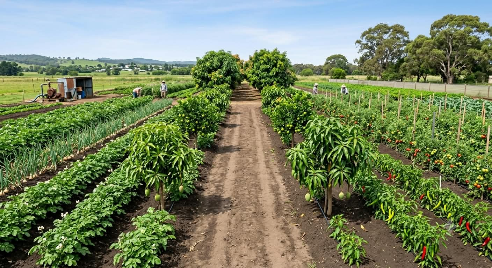

Our Mission
To provide international buyers with reliable access to quality Pakistani agricultural products.
Quality sourcing, dependable supply and professional export service for international B2B buyers.
AgroFresh is a Pakistan-based agricultural export supplier specializing in fresh produce and agricultural products for international markets.
Our approach is built around responsible sourcing, quality-focused preparation, flexible packaging and clear communication throughout the buying process.

To provide international buyers with reliable access to quality Pakistani agricultural products.
To become a trusted global partner for Pakistani agricultural exports.

| Company Name | AgroFresh |
|---|---|
| Established | [2025] |
| Head Office | Mirpur, Pakistan |
| Business Type | Exporter & Supplier |
| Main Products | Fresh Vegetables & Agricultural Products |
| Export Markets | [Middle East, Asia & Global Markets] |